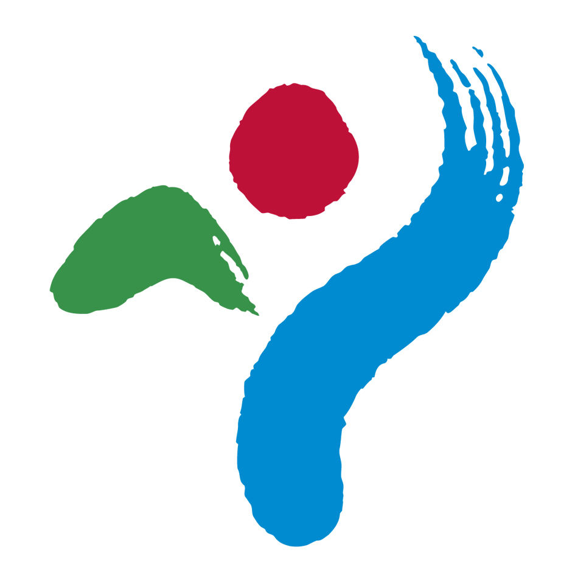

서울특별시

휘장
휘장은 한글 '서울'을 서울의 산, 해, 한강으로
나타내면서 전체적으로는 신명나는 사람의 모습을
형상화한 것으로 인간 중심도시를 지향하는
서울을 상징합니다. 자연 - 인간 - 도시의
맥락 속에서 녹색 산은 환경사랑, 청색 한강은
역사와 활력, 가운데 해는 미래의 비전과 희망을
함축하고, 이 세가지 요소를 붓터치로 자연스럽게
연결하여 서울의 이미지와 사람의 활력을 친근하게
느낄 수 있도록 하였습니다.
통합인증마크
시정 슬로건 : 함께서울
정파, 이념, 계층, 지역 등에 제한 없이 모두를 아우르며
함께 손잡고 시정을 구현해나가겠다는 ‘통합’의 가치
철학을 내포하였습니다. 시정 비전인 ‘사람이 중심인 서울,
시민이 행복한 서울’을 ‘함께’ 만들어나가겠다는 의미로
시정 비전체계의 최상위 개념입니다.
병행 슬로건 : 시민과 함께 세계와 함께
'함께서울'의 의미를 보다 명확하게 규정하기 위해 병행
사용하는 슬로건입니다. 시정운영의 주체이자 협력자인
시민과 함께 시정을 펼침은 물론, 세계와의 교류협력을
통해 글로벌 서울로 도약하겠다는 의지를 담았습니다.